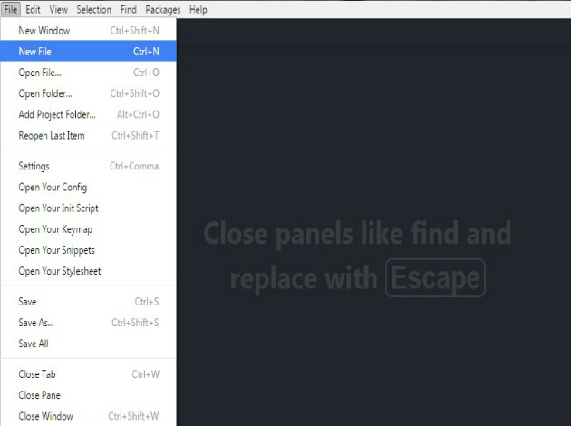
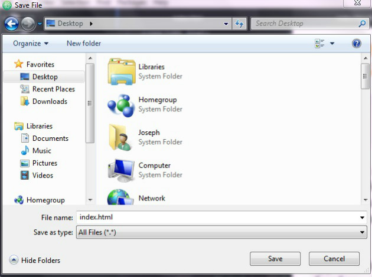
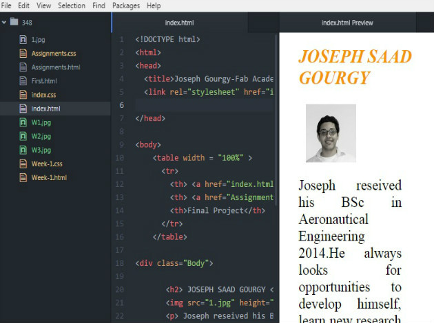
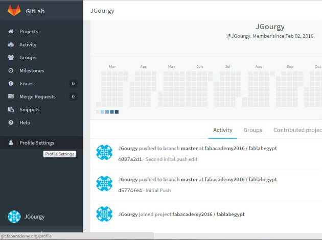
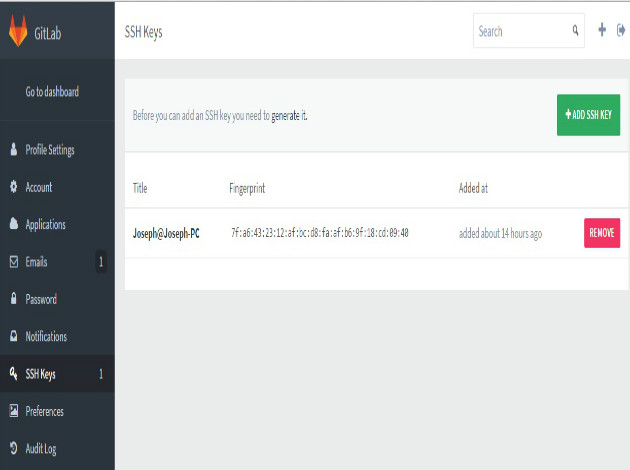
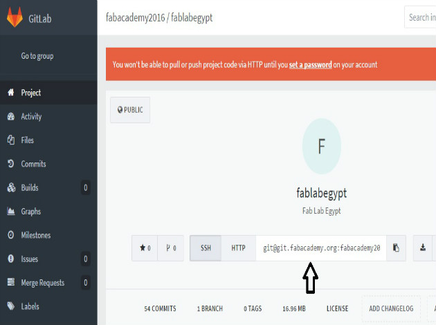
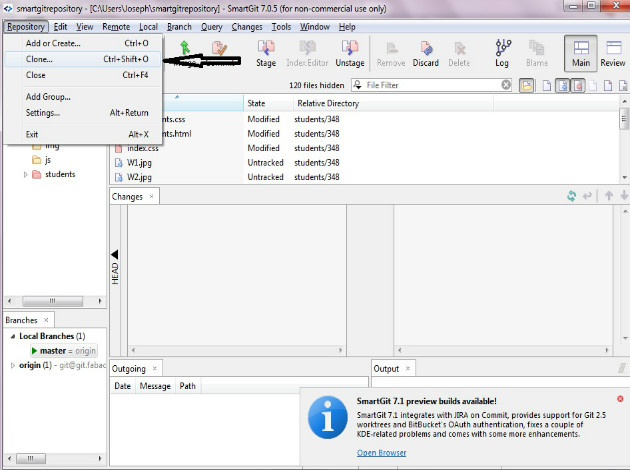
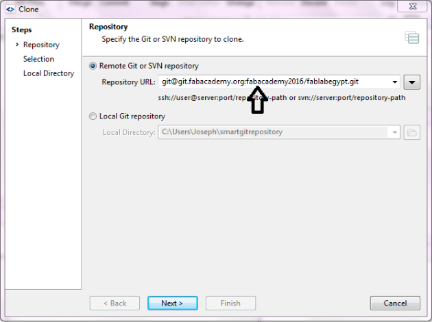
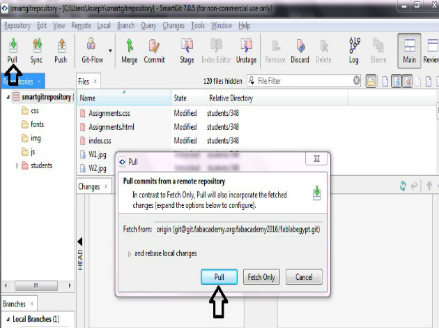
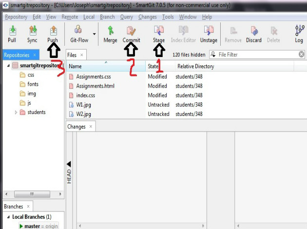

Assignment for week 1
As a first assignment I had to construct this web page. As I have no experience in "Web Development" I wanted to push my limits and learn how to make a web page using "html" and "css", so I start searching and studying, and the best tool I got in the process was The codecademy which I found it pretty useful and friendly. I used ATOM text editor to write and test my codes. Also it has useful open source packages.
To start a new project using ATOM, first I opened "New file", and before writing my HTML or CSS codes I saved the my files as "index.html / index.css" so that the editor can recognize the code.
 The Atom can display a real-time updating to the code by pressing "Ctrl + Shift + H " on keyboard without opening the web browser.
After doing that simple website, I was advised by our mentors to start using templates as they are more effective and interactive. The one I used is Bootsrap. I started editing the template for getting the required results. And this is what you are surfing right now.
uploading files
After I finished edditing my website, the second step is to upload it to my GitLap account by making this steps.
1- Downloading Git and SmartGit for my operating system.
2- Generating SSH key for Git authorization by following this tutorial .
3- Copying the key and opening to my Fab academy "Profile Sittings"
4- Clicking on "SSH keys" then "ADD SSH KEY" and pasting my key.
5- Copying the SSH key of my FabLab
6- Opening "gitsmart" and then clicking on "Repository" to make a clone.
7- Pasting the key on Repository URL
8- Pressing "pull" to dowonload my FabLab repository on my local computer.
9- Going to the downloaded files location and puting me website folders to my specified repository folder
10- Clicking on "Stage" then "Commit" then "Push" to upload the website on the server.
Finally my website is Online :)

This work by Joseph Gourgy is licensed under a Creative Commons Attribution-NonCommercial 4.0 International License.